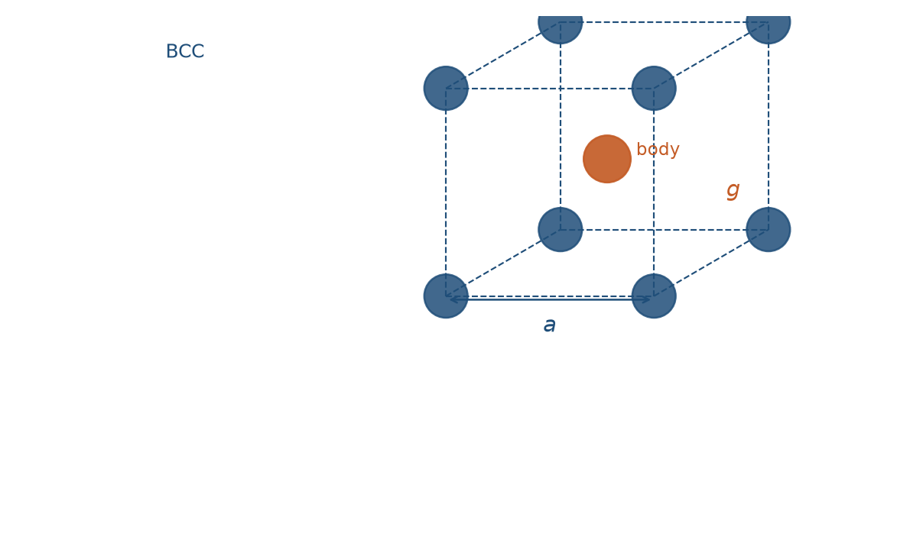
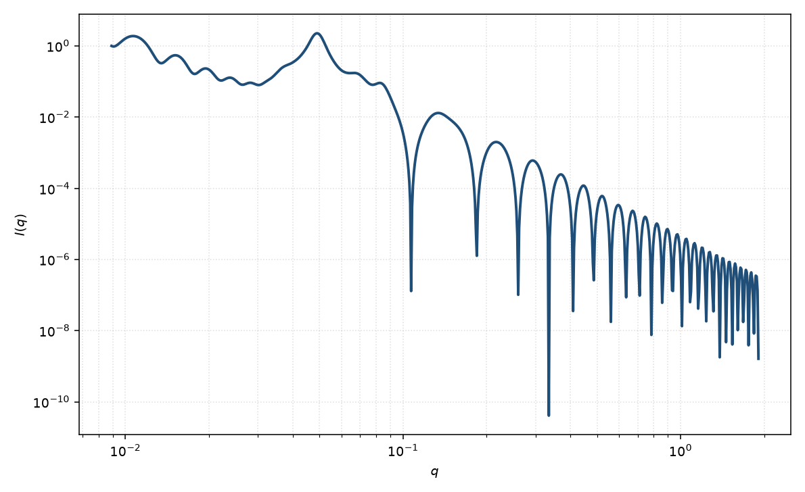

体心立方准晶
BCC paracrystal
适用场景
球形颗粒占据体心立方（BCC）点阵、并带 Hosemann 准晶畸变时用本页。带电胶体在中等体积分数下常取 BCC；嵌段共聚物球形微区在一定 χN 窗口也稳定为 BCC。粉末峰位比接近 $\sqrt{2}:\sqrt{4}:\sqrt{6}$（即 $(110),(200),(211)$）是选用本格子的主要判据。
不要仅凭“看起来有三个峰”就指定 BCC：SC 与 FCC 的允许反射不同。液体样 $S(q)$ 的相关峰更宽、缺少立方消光规则。
物理图像
BCC 惯例晶胞有两点：$(0,0,0)$ 与 $(a/2,a/2,a/2)$。几何结构因子 $|1+\mathrm{e}^{i a(q_x+q_y+q_z)/2}|^2$ 在 $h+k+l$ 为奇数时消光。准晶畸变仍由三个正交 $Z_1$ 描述；Matsuoka 1990 年纠正了 1987 年文中 BCC（及 FCC）晶胞因子的系数，拟合应采用修正后的形式。
最近邻 $d_{\mathrm{nn}}=a\sqrt{3}/2$，第一峰为 $(110)$，$q_1=(2\pi/a)\sqrt{2}$。$g$ 增大时高阶峰先消失，只剩宽化的 $(110)$，曲线会接近液体样结构因子，此时格子类型不再可辨。
示意图


核心公式
一维 $Z_1$ 与 SC 页相同。BCC 再乘两点晶胞因子
$$|F_{\mathrm{bcc}}|^2=2+2\cos\bigl(a(q_x+q_y+q_z)/2\bigr),$$ $$I(q)\propto P_{\mathrm{sph}}(q)\,\bigl\langle Z_1(q_x)Z_1(q_y)Z_1(q_z)\,|F_{\mathrm{bcc}}|^2\bigr\rangle_{\hat{q}}+B.$$允许反射满足 $h+k+l$ 为偶数。由 $q_1$ 反推 $a=2\pi\sqrt{2}/q_1$。
参数表
| 参数 | 符号 | 含义 | 单位 | 典型范围 |
|---|---|---|---|---|
| 晶格常数 | $a$ | 立方惯例晶胞边长 | Å | 由一级峰位反推 |
| 畸变因子 | $g$ | Hosemann 相对涨落 $\sigma_a/a$ | 无量纲 | $0.03$–$0.25$ |
| 相干晶胞数 | $N$ | 有限畴沿一轴的重复数 | — | 4–40 |
| 球半径 | $R$ | 占据格点的均匀球半径 | Å | $2R$ 小于最近邻 |
| 衬度 | $\Delta\rho$ | 粒子与溶剂的 SLD 差 | Å$^{-2}$ | 组成或对比实验 |
| 标度 / 本底 | $\mathrm{scale}$, $B$ | 前置因子与常数本底 | 与强度单位一致 | 实验相关 |
拟合注意
取向：粉末平均把三维倒易点涂成 Debye–Scherrer 环，一维曲线上只剩 $q_{hkl}$。纤维或剪切取向的胶体晶体应保留极角，不要用各向同性粉末公式去拟合弧向收窄的二维峰。
$g$ 与有限畴 $N$、仪器分辨率都加宽峰：优先用峰位定 $a$，用高阶峰是否存在、相对强度约束 $g$，再用一级峰宽估 $N$。未卷积分辨率时会把 smearing 读成更大的 $g$。尺寸多分散主要抹平球形式因子振荡，与格子 $g$ 正交，二者不要互换。
磁性：核磁 SLD 只改格点上的磁形式因子，格子 $a,g,N$ 与核通道共用。可辨识性：只有一个宽峰时，无法同时独立确定格子类型、$g$ 与 $N$，应先由峰位比（$q_{hkl}/q_1$）判断 SC / BCC / FCC，再放开畸变。
相近模型
参考文献
- Hosemann, R.; Bagchi, S. N. Direct Analysis of Diffraction by Matter. North-Holland: Amsterdam, 1962.
- Matsuoka, H.; Tanaka, H.; Hashimoto, T.; Ise, N. Elastic scattering from cubic lattice systems with paracrystalline distortion. Phys. Rev. B 1987, 36, 1754–1765. DOI: 10.1103/PhysRevB.36.1754
- Matsuoka, H.; Tanaka, H.; Iizuka, N.; Hashimoto, T.; Ise, N. Elastic scattering from cubic lattice systems with paracrystalline distortion. II. Phys. Rev. B 1990, 41, 3854–3856. DOI: 10.1103/PhysRevB.41.3854
- Guinier, A.; Fournet, G. Small-Angle Scattering of X-rays. Wiley: New York, 1955.